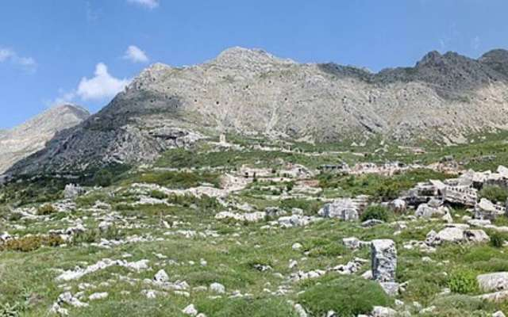
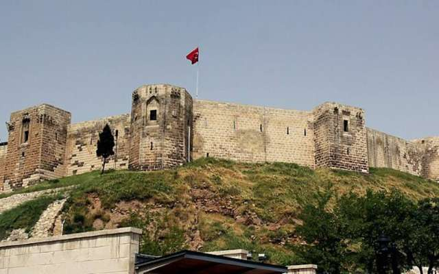
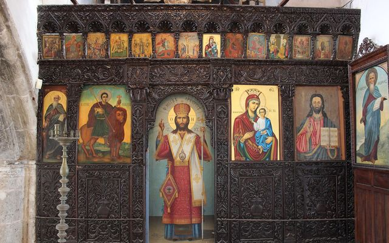
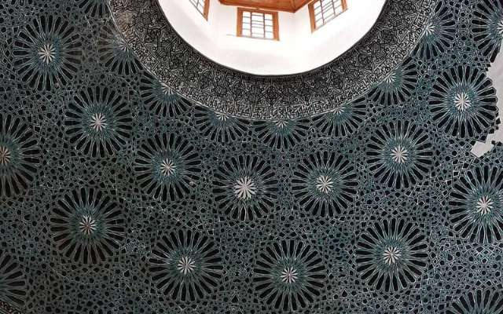

Prehistory & Neolithic
BC 12.000 – 3000 · 8 places
 Arslantepe ÖrenyeriMalatya · Chalcolithic / Bronze Age / Neo-Hittite
Arslantepe ÖrenyeriMalatya · Chalcolithic / Bronze Age / Neo-Hittite GöbeklitepeŞanlıurfa · Neolithic
GöbeklitepeŞanlıurfa · Neolithic Çatalhöyük ÖrenyeriKonya · Neolithic
Çatalhöyük ÖrenyeriKonya · Neolithic Aşıklı HöyükAksaray · Neolithic
Aşıklı HöyükAksaray · Neolithic Karahantepe ÖrenyeriŞanlıurfa · Neolithic
Karahantepe ÖrenyeriŞanlıurfa · Neolithic Karain MağarasıAntalya · PalaeolithicKırklareli MüzesiKırklareli · Prehistory / ThracianŞanlıurfa Arkeoloji MüzesiŞanlıurfa · Neolithic – Ottoman
Karain MağarasıAntalya · PalaeolithicKırklareli MüzesiKırklareli · Prehistory / ThracianŞanlıurfa Arkeoloji MüzesiŞanlıurfa · Neolithic – OttomanBronze Age & Hittites
BC 3000 – 1200 · 16 places
Arslantepe ÖrenyeriMalatya · Chalcolithic / Bronze Age / Neo-Hittite HattuşaÇorum · Hittite
HattuşaÇorum · Hittite TroyaÇanakkale · Bronze Age / Roman
TroyaÇanakkale · Bronze Age / Roman Alacahöyük Müzesi ve ÖrenyeriÇorum · Bronze Age / Hittite
Alacahöyük Müzesi ve ÖrenyeriÇorum · Bronze Age / Hittite Enkomi (Alasya) ÖrenyeriGazimağusa · Bronze Age
Enkomi (Alasya) ÖrenyeriGazimağusa · Bronze Age Fethiye Tlos ÖrenyeriMuğla · Bronze Age – Ottoman
Fethiye Tlos ÖrenyeriMuğla · Bronze Age – Ottoman Harran ÖrenyeriŞanlıurfa · Bronze Age – Middle Ages
Harran ÖrenyeriŞanlıurfa · Bronze Age – Middle Ages Iassos ÖrenyeriMuğla · Bronze Age – Byzantine
Iassos ÖrenyeriMuğla · Bronze Age – Byzantine Kaman Kalehöyük Arkeoloji MüzesiKırşehir · Bronze Age / Iron Age
Kaman Kalehöyük Arkeoloji MüzesiKırşehir · Bronze Age / Iron Age Karatepe Aslantaş Müzesi ve ÖrenyeriOsmaniye · Neo-Hittite (8th century BC)
Karatepe Aslantaş Müzesi ve ÖrenyeriOsmaniye · Neo-Hittite (8th century BC) Kültepe ÖrenyeriKayseri · Bronze Age
Kültepe ÖrenyeriKayseri · Bronze Age Salamis ÖrenyeriGazimağusa · Bronze Age / Roman / Byzantine
Salamis ÖrenyeriGazimağusa · Bronze Age / Roman / Byzantine Yesemek ÖrenyeriGaziantep · Neo-Hittite
Yesemek ÖrenyeriGaziantep · Neo-Hittite Bodrum Sualtı Arkeoloji MüzesiMuğla · Bronze Age – Ottoman
Bodrum Sualtı Arkeoloji MüzesiMuğla · Bronze Age – Ottoman Boğazköy MüzesiÇorum · HittiteŞanlıurfa Arkeoloji MüzesiŞanlıurfa · Neolithic – Ottoman
Boğazköy MüzesiÇorum · HittiteŞanlıurfa Arkeoloji MüzesiŞanlıurfa · Neolithic – OttomanIron Age kingdoms
BC 1200 – 550 · 38 places
Arslantepe ÖrenyeriMalatya · Chalcolithic / Bronze Age / Neo-Hittite Xanthos ÖrenyeriAntalya · Lycian
Xanthos ÖrenyeriAntalya · Lycian Gordion MüzesiAnkara · Phrygian
Gordion MüzesiAnkara · Phrygian Amintas Kaya MezarıMuğla · Lycian (4th century BC)
Amintas Kaya MezarıMuğla · Lycian (4th century BC) Arykanda ÖrenyeriAntalya · Lycian / Roman
Arykanda ÖrenyeriAntalya · Lycian / Roman Fethiye Letoon ÖrenyeriMuğla · Lycian / Roman
Fethiye Letoon ÖrenyeriMuğla · Lycian / Roman Fethiye Pınara ÖrenyeriMuğla · Lycian / RomanFethiye Tlos ÖrenyeriMuğla · Bronze Age – Ottoman
Fethiye Pınara ÖrenyeriMuğla · Lycian / RomanFethiye Tlos ÖrenyeriMuğla · Bronze Age – Ottoman Harput KalesiElâzığ · Urartian / Middle AgesHarran ÖrenyeriŞanlıurfa · Bronze Age – Middle AgesIassos ÖrenyeriMuğla · Bronze Age – ByzantineKaman Kalehöyük Arkeoloji MüzesiKırşehir · Bronze Age / Iron AgeKaratepe Aslantaş Müzesi ve ÖrenyeriOsmaniye · Neo-Hittite (8th century BC)
Harput KalesiElâzığ · Urartian / Middle AgesHarran ÖrenyeriŞanlıurfa · Bronze Age – Middle AgesIassos ÖrenyeriMuğla · Bronze Age – ByzantineKaman Kalehöyük Arkeoloji MüzesiKırşehir · Bronze Age / Iron AgeKaratepe Aslantaş Müzesi ve ÖrenyeriOsmaniye · Neo-Hittite (8th century BC) Kaunos ÖrenyeriMuğla · Carian / Hellenistic / RomanKral Mezarları Müzesi ve ÖrenyeriGazimağusa · Iron Age (8–7th century BC)
Kaunos ÖrenyeriMuğla · Carian / Hellenistic / RomanKral Mezarları Müzesi ve ÖrenyeriGazimağusa · Iron Age (8–7th century BC) Labraunda ÖrenyeriMuğla · Carian / Hellenistic
Labraunda ÖrenyeriMuğla · Carian / Hellenistic Likya Uygarlıkları Müzesi ve Andrıake ÖrenyeriAntalya · Lycian / Roman
Likya Uygarlıkları Müzesi ve Andrıake ÖrenyeriAntalya · Lycian / Roman Limyra ÖrenyeriAntalya · Lycian / Roman
Limyra ÖrenyeriAntalya · Lycian / Roman Midas Yazılıkaya ÖrenyeriEskişehir · Phrygian
Midas Yazılıkaya ÖrenyeriEskişehir · Phrygian Milas Uzunyuva Anıt Mezarı ve Müze KompleksiMuğla · Carian (4th century BC)
Milas Uzunyuva Anıt Mezarı ve Müze KompleksiMuğla · Carian (4th century BC) Myra ÖrenyeriAntalya · Lycian / Roman
Myra ÖrenyeriAntalya · Lycian / Roman Olympos ÖrenyeriAntalya · Lycian / Roman
Olympos ÖrenyeriAntalya · Lycian / Roman Patara ÖrenyeriAntalya · Lycian / Roman
Patara ÖrenyeriAntalya · Lycian / Roman Pessinus ÖrenyeriEskişehir · Phrygian / Hellenistic / Roman
Pessinus ÖrenyeriEskişehir · Phrygian / Hellenistic / Roman Phaselis ÖrenyeriAntalya · Lycian / Roman
Phaselis ÖrenyeriAntalya · Lycian / Roman Sardes ÖrenyeriManisa · Lydian / Roman
Sardes ÖrenyeriManisa · Lydian / Roman Simena ÖrenyeriAntalya · Lycian / Byzantine
Simena ÖrenyeriAntalya · Lycian / Byzantine Van KalesiVan · Urartian – OttomanYesemek ÖrenyeriGaziantep · Neo-Hittite
Van KalesiVan · Urartian – OttomanYesemek ÖrenyeriGaziantep · Neo-Hittite Çavuştepe KalesiVan · Urartian (8–7th century BC)Bodrum Sualtı Arkeoloji MüzesiMuğla · Bronze Age – Ottoman
Çavuştepe KalesiVan · Urartian (8–7th century BC)Bodrum Sualtı Arkeoloji MüzesiMuğla · Bronze Age – Ottoman Erzincan MüzesiErzincan · Urartian / Multi-periodFethiye MüzesiMuğla · Lycian / RomanKırklareli MüzesiKırklareli · Prehistory / Thracian
Erzincan MüzesiErzincan · Urartian / Multi-periodFethiye MüzesiMuğla · Lycian / RomanKırklareli MüzesiKırklareli · Prehistory / Thracian Muğla Bodrum Mausoleium Anıt MüzesiMuğla · Carian (4th century BC)Uşak MüzesiUşak · Lydian / Multi-period
Muğla Bodrum Mausoleium Anıt MüzesiMuğla · Carian (4th century BC)Uşak MüzesiUşak · Lydian / Multi-period Van MüzesiVan · Urartian / Multi-periodŞanlıurfa Arkeoloji MüzesiŞanlıurfa · Neolithic – Ottoman
Van MüzesiVan · Urartian / Multi-periodŞanlıurfa Arkeoloji MüzesiŞanlıurfa · Neolithic – OttomanClassical & Hellenistic
BC 550 – 30 · 61 places
 Afrodisias Müzesi ve ÖrenyeriAydın · Hellenistic / Roman
Afrodisias Müzesi ve ÖrenyeriAydın · Hellenistic / Roman Bergama Akropolüİzmir · Hellenistic / Roman
Bergama Akropolüİzmir · Hellenistic / Roman Bergama Asklepion Örenyeriİzmir · Hellenistic / Roman
Bergama Asklepion Örenyeriİzmir · Hellenistic / Roman Efesİzmir · Hellenistic / Roman
Efesİzmir · Hellenistic / Roman Hierapolis (Pamukkale) ÖrenyeriDenizli · Hellenistic / Roman
Hierapolis (Pamukkale) ÖrenyeriDenizli · Hellenistic / Roman Nemrut DağıAdıyaman · Hellenistic (Commagene)
Nemrut DağıAdıyaman · Hellenistic (Commagene) Agora Örenyeriİzmir · Hellenistic / RomanAigai ÖrenyeriManisa · Hellenistic / Roman
Agora Örenyeriİzmir · Hellenistic / RomanAigai ÖrenyeriManisa · Hellenistic / Roman Alabanda ÖrenyeriAydın · Hellenistic / Roman
Alabanda ÖrenyeriAydın · Hellenistic / Roman Alaşehir ÖrenyeriManisa · Hellenistic / Byzantine
Alaşehir ÖrenyeriManisa · Hellenistic / Byzantine Alexandria Troas ÖrenyeriÇanakkale · Hellenistic / Roman
Alexandria Troas ÖrenyeriÇanakkale · Hellenistic / Roman Alinda ÖrenyeriAydın · Hellenistic / Roman
Alinda ÖrenyeriAydın · Hellenistic / Roman Antalya Syedra Antik KentiAntalya · Hellenistic / Roman
Antalya Syedra Antik KentiAntalya · Hellenistic / Roman Antiocheia ÖrenyeriIsparta · Hellenistic / Roman
Antiocheia ÖrenyeriIsparta · Hellenistic / Roman Apollon Smintheion ÖrenyeriÇanakkale · Hellenistic
Apollon Smintheion ÖrenyeriÇanakkale · Hellenistic Arsemeia ÖrenyeriAdıyaman · Hellenistic (Commagene)
Arsemeia ÖrenyeriAdıyaman · Hellenistic (Commagene) Assos ÖrenyeriÇanakkale · Archaic / Hellenistic
Assos ÖrenyeriÇanakkale · Archaic / Hellenistic Blaundos ÖrenyeriUşak · Hellenistic / Roman
Blaundos ÖrenyeriUşak · Hellenistic / Roman Bodrum Antik TiyatrosuMuğla · Hellenistic / Roman
Bodrum Antik TiyatrosuMuğla · Hellenistic / Roman Denizli Tripolis ÖrenyeriDenizli · Hellenistic / Roman
Denizli Tripolis ÖrenyeriDenizli · Hellenistic / Roman Didim Apollon TapınağıAydın · Hellenistic / RomanFethiye Tlos ÖrenyeriMuğla · Bronze Age – OttomanFilyos(Tios) ÖrenyeriZonguldak · Hellenistic – ByzantineHarran ÖrenyeriŞanlıurfa · Bronze Age – Middle AgesIassos ÖrenyeriMuğla · Bronze Age – Byzantine
Didim Apollon TapınağıAydın · Hellenistic / RomanFethiye Tlos ÖrenyeriMuğla · Bronze Age – OttomanFilyos(Tios) ÖrenyeriZonguldak · Hellenistic – ByzantineHarran ÖrenyeriŞanlıurfa · Bronze Age – Middle AgesIassos ÖrenyeriMuğla · Bronze Age – Byzantine Kahta Yenikale ÖrenyeriAdıyaman · Commagene / Middle Ages
Kahta Yenikale ÖrenyeriAdıyaman · Commagene / Middle Ages Kanlı Divane ÖrenyeriMersin · Hellenistic / Roman / Byzantine
Kanlı Divane ÖrenyeriMersin · Hellenistic / Roman / Byzantine Kastabala ÖrenyeriOsmaniye · Hellenistic / Roman / Middle AgesKaunos ÖrenyeriMuğla · Carian / Hellenistic / Roman
Kastabala ÖrenyeriOsmaniye · Hellenistic / Roman / Middle AgesKaunos ÖrenyeriMuğla · Carian / Hellenistic / Roman Klaros Örenyeriİzmir · Archaic / RomanKlazomenai Örenyeriİzmir · ArchaicLabraunda ÖrenyeriMuğla · Carian / Hellenistic
Klaros Örenyeriİzmir · Archaic / RomanKlazomenai Örenyeriİzmir · ArchaicLabraunda ÖrenyeriMuğla · Carian / Hellenistic Lagina ÖrenyeriMuğla · Hellenistic / Roman
Lagina ÖrenyeriMuğla · Hellenistic / Roman Laodikeia ÖrenyeriDenizli · Hellenistic / Roman
Laodikeia ÖrenyeriDenizli · Hellenistic / Roman Magnesia ÖrenyeriAydın · Hellenistic / Roman
Magnesia ÖrenyeriAydın · Hellenistic / Roman Manisa Akhisar Müzesi ve Akhisar Tepe MezarlığıManisa · Hellenistic / Roman
Manisa Akhisar Müzesi ve Akhisar Tepe MezarlığıManisa · Hellenistic / Roman Metropolis Örenyeriİzmir · Hellenistic / Roman
Metropolis Örenyeriİzmir · Hellenistic / Roman Milas Euromos ÖrenyeriMuğla · Hellenistic / Roman
Milas Euromos ÖrenyeriMuğla · Hellenistic / Roman Milet ÖrenyeriAydın · Archaic / Roman
Milet ÖrenyeriAydın · Archaic / Roman Muğla Knidos ÖrenyeriMuğla · Classical / Hellenistic
Muğla Knidos ÖrenyeriMuğla · Classical / Hellenistic Nysa Sultanhisar ÖrenyeriAydın · Hellenistic / Roman
Nysa Sultanhisar ÖrenyeriAydın · Hellenistic / Roman Perge ÖrenyeriAntalya · Hellenistic / Roman
Perge ÖrenyeriAntalya · Hellenistic / Roman Perre ÖrenyeriAdıyaman · Commagene / RomanPessinus ÖrenyeriEskişehir · Phrygian / Hellenistic / Roman
Perre ÖrenyeriAdıyaman · Commagene / RomanPessinus ÖrenyeriEskişehir · Phrygian / Hellenistic / Roman Priene ÖrenyeriAydın · Hellenistic
Priene ÖrenyeriAydın · Hellenistic
Sagalassos ÖrenyeriBurdur · Hellenistic / Roman Sedir Adası ÖrenyeriMuğla · Hellenistic / Roman
Sedir Adası ÖrenyeriMuğla · Hellenistic / Roman Side ÖrenyeriAntalya · Hellenistic / RomanSofraz Anıt MezarıAdıyaman · Hellenistic / Roman
Side ÖrenyeriAntalya · Hellenistic / RomanSofraz Anıt MezarıAdıyaman · Hellenistic / Roman Soli ÖrenyeriLefke · Archaic / Roman
Soli ÖrenyeriLefke · Archaic / Roman Stratonikeia ÖrenyeriMuğla · Hellenistic – Ottoman
Stratonikeia ÖrenyeriMuğla · Hellenistic – Ottoman Teos Örenyeriİzmir · Archaic / Hellenistic
Teos Örenyeriİzmir · Archaic / Hellenistic Termessos ÖrenyeriAntalya · Hellenistic / Roman
Termessos ÖrenyeriAntalya · Hellenistic / Roman Uzuncaburç ÖrenyeriMersin · Hellenistic / RomanVan KalesiVan · Urartian – Ottoman
Uzuncaburç ÖrenyeriMersin · Hellenistic / RomanVan KalesiVan · Urartian – Ottoman Vouni SarayıLefke · Classical (5th century BC)
Vouni SarayıLefke · Classical (5th century BC) Zeugma ÖrenyeriGaziantep · Hellenistic / RomanÇevlik ÖrenyeriHatay · Hellenistic / Roman
Zeugma ÖrenyeriGaziantep · Hellenistic / RomanÇevlik ÖrenyeriHatay · Hellenistic / Roman Şanlıurfa KalesiŞanlıurfa · Hellenistic – Middle AgesBodrum Sualtı Arkeoloji MüzesiMuğla · Bronze Age – OttomanŞanlıurfa Arkeoloji MüzesiŞanlıurfa · Neolithic – Ottoman
Şanlıurfa KalesiŞanlıurfa · Hellenistic – Middle AgesBodrum Sualtı Arkeoloji MüzesiMuğla · Bronze Age – OttomanŞanlıurfa Arkeoloji MüzesiŞanlıurfa · Neolithic – OttomanRoman period
BC 30 – AD 330 · 86 places
Afrodisias Müzesi ve ÖrenyeriAydın · Hellenistic / RomanBergama Akropolüİzmir · Hellenistic / RomanBergama Asklepion Örenyeriİzmir · Hellenistic / Roman Bergama Kızılavluİzmir · Roman / ByzantineEfesİzmir · Hellenistic / RomanHierapolis (Pamukkale) ÖrenyeriDenizli · Hellenistic / RomanTroyaÇanakkale · Bronze Age / RomanAgora Örenyeriİzmir · Hellenistic / RomanAigai ÖrenyeriManisa · Hellenistic / Roman
Bergama Kızılavluİzmir · Roman / ByzantineEfesİzmir · Hellenistic / RomanHierapolis (Pamukkale) ÖrenyeriDenizli · Hellenistic / RomanTroyaÇanakkale · Bronze Age / RomanAgora Örenyeriİzmir · Hellenistic / RomanAigai ÖrenyeriManisa · Hellenistic / Roman Aizanoi ÖrenyeriKütahya · RomanAlabanda ÖrenyeriAydın · Hellenistic / RomanAlexandria Troas ÖrenyeriÇanakkale · Hellenistic / RomanAlinda ÖrenyeriAydın · Hellenistic / Roman
Aizanoi ÖrenyeriKütahya · RomanAlabanda ÖrenyeriAydın · Hellenistic / RomanAlexandria Troas ÖrenyeriÇanakkale · Hellenistic / RomanAlinda ÖrenyeriAydın · Hellenistic / Roman Anavarza ÖrenyeriAdana · Roman / Byzantine
Anavarza ÖrenyeriAdana · Roman / Byzantine Anemurium ÖrenyeriMersin · Roman / ByzantineAntalya Syedra Antik KentiAntalya · Hellenistic / RomanAntiocheia ÖrenyeriIsparta · Hellenistic / RomanArykanda ÖrenyeriAntalya · Lycian / Roman
Anemurium ÖrenyeriMersin · Roman / ByzantineAntalya Syedra Antik KentiAntalya · Hellenistic / RomanAntiocheia ÖrenyeriIsparta · Hellenistic / RomanArykanda ÖrenyeriAntalya · Lycian / Roman AspendosAntalya · RomanBlaundos ÖrenyeriUşak · Hellenistic / RomanBodrum Antik TiyatrosuMuğla · Hellenistic / RomanDenizli Tripolis ÖrenyeriDenizli · Hellenistic / RomanDidim Apollon TapınağıAydın · Hellenistic / Roman
AspendosAntalya · RomanBlaundos ÖrenyeriUşak · Hellenistic / RomanBodrum Antik TiyatrosuMuğla · Hellenistic / RomanDenizli Tripolis ÖrenyeriDenizli · Hellenistic / RomanDidim Apollon TapınağıAydın · Hellenistic / Roman Edirne Makedonya KulesiEdirne · Roman / Byzantine / Ottoman
Edirne Makedonya KulesiEdirne · Roman / Byzantine / Ottoman Efes Örenyeri-Yamaçevlerİzmir · Roman / ByzantineFethiye Letoon ÖrenyeriMuğla · Lycian / RomanFethiye Pınara ÖrenyeriMuğla · Lycian / RomanFethiye Tlos ÖrenyeriMuğla · Bronze Age – OttomanFilyos(Tios) ÖrenyeriZonguldak · Hellenistic – ByzantineGermanicia Mozaikli AlanKahramanmaraş · RomanHadrianopolis ÖrenyeriKarabük · Roman / ByzantineHarran ÖrenyeriŞanlıurfa · Bronze Age – Middle AgesIassos ÖrenyeriMuğla · Bronze Age – ByzantineKanlı Divane ÖrenyeriMersin · Hellenistic / Roman / ByzantineKastabala ÖrenyeriOsmaniye · Hellenistic / Roman / Middle AgesKaunos ÖrenyeriMuğla · Carian / Hellenistic / Roman
Efes Örenyeri-Yamaçevlerİzmir · Roman / ByzantineFethiye Letoon ÖrenyeriMuğla · Lycian / RomanFethiye Pınara ÖrenyeriMuğla · Lycian / RomanFethiye Tlos ÖrenyeriMuğla · Bronze Age – OttomanFilyos(Tios) ÖrenyeriZonguldak · Hellenistic – ByzantineGermanicia Mozaikli AlanKahramanmaraş · RomanHadrianopolis ÖrenyeriKarabük · Roman / ByzantineHarran ÖrenyeriŞanlıurfa · Bronze Age – Middle AgesIassos ÖrenyeriMuğla · Bronze Age – ByzantineKanlı Divane ÖrenyeriMersin · Hellenistic / Roman / ByzantineKastabala ÖrenyeriOsmaniye · Hellenistic / Roman / Middle AgesKaunos ÖrenyeriMuğla · Carian / Hellenistic / Roman Kibyra ÖrenyeriBurdur · RomanKlaros Örenyeriİzmir · Archaic / RomanLagina ÖrenyeriMuğla · Hellenistic / RomanLaodikeia ÖrenyeriDenizli · Hellenistic / RomanLikya Uygarlıkları Müzesi ve Andrıake ÖrenyeriAntalya · Lycian / RomanLimyra ÖrenyeriAntalya · Lycian / RomanMagnesia ÖrenyeriAydın · Hellenistic / RomanManisa Akhisar Müzesi ve Akhisar Tepe MezarlığıManisa · Hellenistic / RomanMetropolis Örenyeriİzmir · Hellenistic / RomanMilas Euromos ÖrenyeriMuğla · Hellenistic / RomanMilet ÖrenyeriAydın · Archaic / RomanMyra ÖrenyeriAntalya · Lycian / RomanNiğde Andaval ÖrenyeriNiğde · Roman / ByzantineNysa Sultanhisar ÖrenyeriAydın · Hellenistic / RomanOlympos ÖrenyeriAntalya · Lycian / RomanPatara ÖrenyeriAntalya · Lycian / RomanPerge ÖrenyeriAntalya · Hellenistic / RomanPerre ÖrenyeriAdıyaman · Commagene / RomanPessinus ÖrenyeriEskişehir · Phrygian / Hellenistic / RomanPhaselis ÖrenyeriAntalya · Lycian / Roman
Kibyra ÖrenyeriBurdur · RomanKlaros Örenyeriİzmir · Archaic / RomanLagina ÖrenyeriMuğla · Hellenistic / RomanLaodikeia ÖrenyeriDenizli · Hellenistic / RomanLikya Uygarlıkları Müzesi ve Andrıake ÖrenyeriAntalya · Lycian / RomanLimyra ÖrenyeriAntalya · Lycian / RomanMagnesia ÖrenyeriAydın · Hellenistic / RomanManisa Akhisar Müzesi ve Akhisar Tepe MezarlığıManisa · Hellenistic / RomanMetropolis Örenyeriİzmir · Hellenistic / RomanMilas Euromos ÖrenyeriMuğla · Hellenistic / RomanMilet ÖrenyeriAydın · Archaic / RomanMyra ÖrenyeriAntalya · Lycian / RomanNiğde Andaval ÖrenyeriNiğde · Roman / ByzantineNysa Sultanhisar ÖrenyeriAydın · Hellenistic / RomanOlympos ÖrenyeriAntalya · Lycian / RomanPatara ÖrenyeriAntalya · Lycian / RomanPerge ÖrenyeriAntalya · Hellenistic / RomanPerre ÖrenyeriAdıyaman · Commagene / RomanPessinus ÖrenyeriEskişehir · Phrygian / Hellenistic / RomanPhaselis ÖrenyeriAntalya · Lycian / Roman Roma Hamamı ÖrenyeriAnkara · RomanSagalassos ÖrenyeriBurdur · Hellenistic / RomanSalamis ÖrenyeriGazimağusa · Bronze Age / Roman / ByzantineSardes ÖrenyeriManisa · Lydian / Roman
Roma Hamamı ÖrenyeriAnkara · RomanSagalassos ÖrenyeriBurdur · Hellenistic / RomanSalamis ÖrenyeriGazimağusa · Bronze Age / Roman / ByzantineSardes ÖrenyeriManisa · Lydian / Roman Sarıkaya Roma HamamıYozgat · RomanSedir Adası ÖrenyeriMuğla · Hellenistic / RomanSide ÖrenyeriAntalya · Hellenistic / RomanSobessos ÖrenyeriNevşehir · Roman / ByzantineSofraz Anıt MezarıAdıyaman · Hellenistic / RomanSoli ÖrenyeriLefke · Archaic / RomanStratonikeia ÖrenyeriMuğla · Hellenistic – Ottoman
Sarıkaya Roma HamamıYozgat · RomanSedir Adası ÖrenyeriMuğla · Hellenistic / RomanSide ÖrenyeriAntalya · Hellenistic / RomanSobessos ÖrenyeriNevşehir · Roman / ByzantineSofraz Anıt MezarıAdıyaman · Hellenistic / RomanSoli ÖrenyeriLefke · Archaic / RomanStratonikeia ÖrenyeriMuğla · Hellenistic – Ottoman Tarsus St. Paul KuyusuMersin · Roman / Early ChristianTermessos ÖrenyeriAntalya · Hellenistic / RomanUzuncaburç ÖrenyeriMersin · Hellenistic / RomanVan KalesiVan · Urartian – OttomanZeugma ÖrenyeriGaziantep · Hellenistic / RomanÇevlik ÖrenyeriHatay · Hellenistic / RomanŞanlıurfa KalesiŞanlıurfa · Hellenistic – Middle AgesBodrum Sualtı Arkeoloji MüzesiMuğla · Bronze Age – OttomanFethiye MüzesiMuğla · Lycian / Roman
Tarsus St. Paul KuyusuMersin · Roman / Early ChristianTermessos ÖrenyeriAntalya · Hellenistic / RomanUzuncaburç ÖrenyeriMersin · Hellenistic / RomanVan KalesiVan · Urartian – OttomanZeugma ÖrenyeriGaziantep · Hellenistic / RomanÇevlik ÖrenyeriHatay · Hellenistic / RomanŞanlıurfa KalesiŞanlıurfa · Hellenistic – Middle AgesBodrum Sualtı Arkeoloji MüzesiMuğla · Bronze Age – OttomanFethiye MüzesiMuğla · Lycian / Roman Haleplibahçe Mozaik MüzesiŞanlıurfa · Roman / Byzantine
Haleplibahçe Mozaik MüzesiŞanlıurfa · Roman / Byzantine Hatay Arkeoloji MüzesiHatay · Roman / Multi-period
Hatay Arkeoloji MüzesiHatay · Roman / Multi-period Hierapolis (Pamukkale) Arkeoloji MüzesiDenizli · RomanKocaeli Arkeoloji MüzesiKocaeli · Roman / Multi-period
Hierapolis (Pamukkale) Arkeoloji MüzesiDenizli · RomanKocaeli Arkeoloji MüzesiKocaeli · Roman / Multi-period Konuralp MüzesiDüzce · Roman
Konuralp MüzesiDüzce · Roman Side MüzesiAntalya · Roman
Side MüzesiAntalya · Roman Silifke Narlıkuyu Mozaik MüzesiMersin · Roman
Silifke Narlıkuyu Mozaik MüzesiMersin · Roman Yalvaç MüzesiIsparta · Roman / Multi-period
Yalvaç MüzesiIsparta · Roman / Multi-period Zeugma Mozaik MüzesiGaziantep · RomanŞanlıurfa Arkeoloji MüzesiŞanlıurfa · Neolithic – Ottoman
Zeugma Mozaik MüzesiGaziantep · RomanŞanlıurfa Arkeoloji MüzesiŞanlıurfa · Neolithic – OttomanByzantine & Medieval
330 – 1453 · 90 places
 Ani ÖrenyeriKars · Middle AgesBergama Kızılavluİzmir · Roman / Byzantine
Ani ÖrenyeriKars · Middle AgesBergama Kızılavluİzmir · Roman / Byzantine Derinkuyu Yeraltı ŞehriNevşehir · Byzantine
Derinkuyu Yeraltı ŞehriNevşehir · Byzantine El Nazar KilisesiNevşehir · Byzantine (10th century)
El Nazar KilisesiNevşehir · Byzantine (10th century) Göreme ÖrenyeriNevşehir · Byzantine (9–12th century)
Göreme ÖrenyeriNevşehir · Byzantine (9–12th century) Karanlık Kilise (Göreme)Nevşehir · Byzantine (11th century)
Karanlık Kilise (Göreme)Nevşehir · Byzantine (11th century) Kaymaklı Yeraltı ŞehriNevşehir · Byzantine
Kaymaklı Yeraltı ŞehriNevşehir · Byzantine Zelve - Paşabağlar ÖrenyeriNevşehir · Byzantine / Ottoman
Zelve - Paşabağlar ÖrenyeriNevşehir · Byzantine / Ottoman Çavuşin Örenyeri (Çavuşin Kilisesi)Nevşehir · ByzantineAksaray Manastır Vadisi ÖrenyeriAksaray · Byzantine
Çavuşin Örenyeri (Çavuşin Kilisesi)Nevşehir · ByzantineAksaray Manastır Vadisi ÖrenyeriAksaray · Byzantine Alahan ManastırıMersin · ByzantineAlaşehir ÖrenyeriManisa · Hellenistic / ByzantineAnavarza ÖrenyeriAdana · Roman / ByzantineAnemurium ÖrenyeriMersin · Roman / Byzantine
Alahan ManastırıMersin · ByzantineAlaşehir ÖrenyeriManisa · Hellenistic / ByzantineAnavarza ÖrenyeriAdana · Roman / ByzantineAnemurium ÖrenyeriMersin · Roman / Byzantine Antiphonitis KilisesiGirne · Byzantine (12th century)
Antiphonitis KilisesiGirne · Byzantine (12th century) Apostolos Andreas Manastırıİskele · Byzantine / Ottoman
Apostolos Andreas Manastırıİskele · Byzantine / Ottoman Ayasuluk - St.Jean Örenyeriİzmir · Byzantine
Ayasuluk - St.Jean Örenyeriİzmir · Byzantine Ayasuluk Kalesiİzmir · Byzantine / Anatolian principalitiesAyia Trias Bazilikasıİskele · Early ChristianAziz Mercurius Yeraltı ŞehriAksaray · Byzantine
Ayasuluk Kalesiİzmir · Byzantine / Anatolian principalitiesAyia Trias Bazilikasıİskele · Early ChristianAziz Mercurius Yeraltı ŞehriAksaray · Byzantine Bellapais ManastırıGirne · Lusignan
Bellapais ManastırıGirne · Lusignan Buffavento KalesiGirne · Byzantine / LusignanBursa İznik Göl BazilikasıBursa · Byzantine
Buffavento KalesiGirne · Byzantine / LusignanBursa İznik Göl BazilikasıBursa · Byzantine Dara ÖrenyeriMardin · ByzantineEdirne Makedonya KulesiEdirne · Roman / Byzantine / OttomanEfes Örenyeri-Yamaçevlerİzmir · Roman / Byzantine
Dara ÖrenyeriMardin · ByzantineEdirne Makedonya KulesiEdirne · Roman / Byzantine / OttomanEfes Örenyeri-Yamaçevlerİzmir · Roman / Byzantine Erzurum KalesiErzurum · Byzantine / Seljuk / Ottoman
Erzurum KalesiErzurum · Byzantine / Seljuk / Ottoman Fethiye Gemile AdasıMuğla · ByzantineFethiye Tlos ÖrenyeriMuğla · Bronze Age – OttomanFilyos(Tios) ÖrenyeriZonguldak · Hellenistic – Byzantine
Fethiye Gemile AdasıMuğla · ByzantineFethiye Tlos ÖrenyeriMuğla · Bronze Age – OttomanFilyos(Tios) ÖrenyeriZonguldak · Hellenistic – Byzantine
Gaziantep KalesiGaziantep · Byzantine / Mamluk / Ottoman Girne Kalesi ve Batık Gemi MüzesiGirne · Byzantine / Venetian
Girne Kalesi ve Batık Gemi MüzesiGirne · Byzantine / Venetian Gözne KalesiMersin · Middle Ages
Gözne KalesiMersin · Middle Ages Gülşehir-St.Jean KilisesiNevşehir · Byzantine (13th century)
Gülşehir-St.Jean KilisesiNevşehir · Byzantine (13th century) Gümüşler Manastırı ve Yeraltı ŞehriNiğde · ByzantineHadrianopolis ÖrenyeriKarabük · Roman / ByzantineHarput KalesiElâzığ · Urartian / Middle AgesHarran ÖrenyeriŞanlıurfa · Bronze Age – Middle AgesIassos ÖrenyeriMuğla · Bronze Age – Byzantine
Gümüşler Manastırı ve Yeraltı ŞehriNiğde · ByzantineHadrianopolis ÖrenyeriKarabük · Roman / ByzantineHarput KalesiElâzığ · Urartian / Middle AgesHarran ÖrenyeriŞanlıurfa · Bronze Age – Middle AgesIassos ÖrenyeriMuğla · Bronze Age – Byzantine Ihlara Vadisi ÖrenyeriAksaray · ByzantineKadıkalesi ÖrenyeriAydın · Byzantine / Middle AgesKahta Yenikale ÖrenyeriAdıyaman · Commagene / Middle AgesKanlı Divane ÖrenyeriMersin · Hellenistic / Roman / Byzantine
Ihlara Vadisi ÖrenyeriAksaray · ByzantineKadıkalesi ÖrenyeriAydın · Byzantine / Middle AgesKahta Yenikale ÖrenyeriAdıyaman · Commagene / Middle AgesKanlı Divane ÖrenyeriMersin · Hellenistic / Roman / Byzantine Kantara Kalesiİskele · Byzantine / LusignanKastabala ÖrenyeriOsmaniye · Hellenistic / Roman / Middle Ages
Kantara Kalesiİskele · Byzantine / LusignanKastabala ÖrenyeriOsmaniye · Hellenistic / Roman / Middle Ages Keskin Sulu Mağara Yeraltı ŞehriKırıkkale · Byzantine / Middle AgesKüçük Ayvasıl St. Anna KilisesiTrabzon · Byzantine (9th century)
Keskin Sulu Mağara Yeraltı ŞehriKırıkkale · Byzantine / Middle AgesKüçük Ayvasıl St. Anna KilisesiTrabzon · Byzantine (9th century) Kız Kulesiİstanbul · Byzantine / Ottoman
Kız Kulesiİstanbul · Byzantine / Ottoman Lala Mustafa Paşa CamiiGazimağusa · Lusignan / Ottoman
Lala Mustafa Paşa CamiiGazimağusa · Lusignan / Ottoman Mamure KalesiMersin · Middle Ages / OttomanMazı Yeraltı ŞehriNevşehir · Byzantine
Mamure KalesiMersin · Middle Ages / OttomanMazı Yeraltı ŞehriNevşehir · Byzantine Mersin Kız KalesiMersin · Byzantine / Middle Ages
Mersin Kız KalesiMersin · Byzantine / Middle Ages Meryem Ana ManastırıGiresun · ByzantineMucur Yeraltı ŞehriKırşehir · Byzantine / Middle AgesNiğde Andaval ÖrenyeriNiğde · Roman / Byzantine
Meryem Ana ManastırıGiresun · ByzantineMucur Yeraltı ŞehriKırşehir · Byzantine / Middle AgesNiğde Andaval ÖrenyeriNiğde · Roman / Byzantine Othello KalesiGazimağusa · Lusignan / Venetian
Othello KalesiGazimağusa · Lusignan / Venetian Rumkale ÖrenyeriGaziantep · Middle AgesSalamis ÖrenyeriGazimağusa · Bronze Age / Roman / Byzantine
Rumkale ÖrenyeriGaziantep · Middle AgesSalamis ÖrenyeriGazimağusa · Bronze Age / Roman / Byzantine Saratlı Kırkgöz Yeraltı ŞehriAksaray · Byzantine
Saratlı Kırkgöz Yeraltı ŞehriAksaray · Byzantine Selimiye CamiiLefkoşa · Lusignan / Ottoman
Selimiye CamiiLefkoşa · Lusignan / Ottoman Silifke Ayatekla ÖrenyeriMersin · Early Christian / Byzantine
Silifke Ayatekla ÖrenyeriMersin · Early Christian / Byzantine Silifke Cennet Cehennem ObruklarıMersin · Natural site / ByzantineSimena ÖrenyeriAntalya · Lycian / ByzantineSobessos ÖrenyeriNevşehir · Roman / Byzantine
Silifke Cennet Cehennem ObruklarıMersin · Natural site / ByzantineSimena ÖrenyeriAntalya · Lycian / ByzantineSobessos ÖrenyeriNevşehir · Roman / Byzantine St. Barnabas ManastırıGazimağusa · Early Christian / Ottoman
St. Barnabas ManastırıGazimağusa · Early Christian / Ottoman St. Hilarion KalesiGirne · Byzantine / Lusignan
St. Hilarion KalesiGirne · Byzantine / Lusignan St. Simon ManastırıHatay · ByzantineStratonikeia ÖrenyeriMuğla · Hellenistic – Ottoman
St. Simon ManastırıHatay · ByzantineStratonikeia ÖrenyeriMuğla · Hellenistic – Ottoman Sümela ManastırıTrabzon · Byzantine – 20th centuryTarsus St. Paul KuyusuMersin · Roman / Early Christian
Sümela ManastırıTrabzon · Byzantine – 20th centuryTarsus St. Paul KuyusuMersin · Roman / Early Christian Tatlarin Yeraltı ŞehriNevşehir · ByzantineVan KalesiVan · Urartian – Ottoman
Tatlarin Yeraltı ŞehriNevşehir · ByzantineVan KalesiVan · Urartian – Ottoman Yeşilhisar Soğanlı ÖrenyeriKayseri · Byzantine
Yeşilhisar Soğanlı ÖrenyeriKayseri · Byzantine Özkonak Yeraltı ŞehriNevşehir · Byzantine
Özkonak Yeraltı ŞehriNevşehir · Byzantine İstanbul Galata Kulesiİstanbul · Genoese / OttomanŞanlıurfa KalesiŞanlıurfa · Hellenistic – Middle AgesAkdamar Anıt MüzesiVan · Middle Ages (10th century)
İstanbul Galata Kulesiİstanbul · Genoese / OttomanŞanlıurfa KalesiŞanlıurfa · Hellenistic – Middle AgesAkdamar Anıt MüzesiVan · Middle Ages (10th century) Ayasofya Tarih ve Deneyim Müzesiİstanbul · Byzantine / Ottoman
Ayasofya Tarih ve Deneyim Müzesiİstanbul · Byzantine / Ottoman Aziz (St.) Nikolaos Anıt MüzesiAntalya · ByzantineBodrum Serçe Limanı Cam Batığı Sergi SalonuMuğla · Middle Ages (11th century)Bodrum Sualtı Arkeoloji MüzesiMuğla · Bronze Age – Ottoman
Aziz (St.) Nikolaos Anıt MüzesiAntalya · ByzantineBodrum Serçe Limanı Cam Batığı Sergi SalonuMuğla · Middle Ages (11th century)Bodrum Sualtı Arkeoloji MüzesiMuğla · Bronze Age – Ottoman Büyük Saray Mozaikleri Müzesiİstanbul · Byzantine
Büyük Saray Mozaikleri Müzesiİstanbul · Byzantine Fethiye Müzesiİstanbul · ByzantineHaleplibahçe Mozaik MüzesiŞanlıurfa · Roman / Byzantine
Fethiye Müzesiİstanbul · ByzantineHaleplibahçe Mozaik MüzesiŞanlıurfa · Roman / Byzantine Lapidari MüzesiLefkoşa · Lusignan / Venetian
Lapidari MüzesiLefkoşa · Lusignan / Venetian Namık Kemal Zindanı ve MüzesiGazimağusa · Venetian / Ottoman
Namık Kemal Zindanı ve MüzesiGazimağusa · Venetian / Ottoman St. Pierre Anıt MüzesiHatay · Early Christian
St. Pierre Anıt MüzesiHatay · Early Christian Tarsus St. Paul Anıt MüzesiMersin · Ottoman / Christian
Tarsus St. Paul Anıt MüzesiMersin · Ottoman / Christian
İskele İkon Müzesiİskele · Byzantine (12th century)Şanlıurfa Arkeoloji MüzesiŞanlıurfa · Neolithic – OttomanSeljuks & Principalities
1071 – 1400 · 19 places
 Ahlat Selçuklu MezarlığıBitlis · Seljuk / Anatolian principalities
Ahlat Selçuklu MezarlığıBitlis · Seljuk / Anatolian principalities Alanya KalesiAntalya · SeljukAyasuluk Kalesiİzmir · Byzantine / Anatolian principalitiesErzurum KalesiErzurum · Byzantine / Seljuk / OttomanFethiye Tlos ÖrenyeriMuğla · Bronze Age – OttomanGaziantep KalesiGaziantep · Byzantine / Mamluk / Ottoman
Alanya KalesiAntalya · SeljukAyasuluk Kalesiİzmir · Byzantine / Anatolian principalitiesErzurum KalesiErzurum · Byzantine / Seljuk / OttomanFethiye Tlos ÖrenyeriMuğla · Bronze Age – OttomanGaziantep KalesiGaziantep · Byzantine / Mamluk / Ottoman Milas Beçin Kalesi ve ÖrenyeriMuğla · Antiquity / Menteshe principalityStratonikeia ÖrenyeriMuğla · Hellenistic – OttomanSümela ManastırıTrabzon · Byzantine – 20th centuryVan KalesiVan · Urartian – OttomanBodrum Sualtı Arkeoloji MüzesiMuğla · Bronze Age – Ottoman
Milas Beçin Kalesi ve ÖrenyeriMuğla · Antiquity / Menteshe principalityStratonikeia ÖrenyeriMuğla · Hellenistic – OttomanSümela ManastırıTrabzon · Byzantine – 20th centuryVan KalesiVan · Urartian – OttomanBodrum Sualtı Arkeoloji MüzesiMuğla · Bronze Age – Ottoman Etnografya MüzesiAnkara · Seljuk / Ottoman / Republican era
Etnografya MüzesiAnkara · Seljuk / Ottoman / Republican era Hacıbektaş MüzesiNevşehir · Seljuk / Ottoman
Hacıbektaş MüzesiNevşehir · Seljuk / Ottoman
Karatay (Çini Eserler) MüzesiKonya · SeljukMalazgirt MüzesiMuş · Seljuk (1071) Mevlana MüzesiKonya · Seljuk / OttomanMevlevihane MüzesiAntalya · Seljuk / Ottoman
Mevlana MüzesiKonya · Seljuk / OttomanMevlevihane MüzesiAntalya · Seljuk / Ottoman Türk ve İslam Eserleri Müzesiİstanbul · Seljuk / OttomanŞanlıurfa Arkeoloji MüzesiŞanlıurfa · Neolithic – Ottoman
Türk ve İslam Eserleri Müzesiİstanbul · Seljuk / OttomanŞanlıurfa Arkeoloji MüzesiŞanlıurfa · Neolithic – OttomanOttoman period
1299 – 1922 · 76 places
Zelve - Paşabağlar ÖrenyeriNevşehir · Byzantine / OttomanAkşemsettin TürbesiBolu · OttomanApostolos Andreas Manastırıİskele · Byzantine / Ottoman Büyük HanLefkoşa · Ottoman (16th century)Edirne Makedonya KulesiEdirne · Roman / Byzantine / OttomanErzurum KalesiErzurum · Byzantine / Seljuk / Ottoman
Büyük HanLefkoşa · Ottoman (16th century)Edirne Makedonya KulesiEdirne · Roman / Byzantine / OttomanErzurum KalesiErzurum · Byzantine / Seljuk / Ottoman Fethiye Kayaköy ÖrenyeriMuğla · 19–20th centuryFethiye Tlos ÖrenyeriMuğla · Bronze Age – OttomanGaziantep KalesiGaziantep · Byzantine / Mamluk / Ottoman
Fethiye Kayaköy ÖrenyeriMuğla · 19–20th centuryFethiye Tlos ÖrenyeriMuğla · Bronze Age – OttomanGaziantep KalesiGaziantep · Byzantine / Mamluk / Ottoman Hoşap KalesiVan · Ottoman (17th century)Kız Kulesiİstanbul · Byzantine / OttomanLala Mustafa Paşa CamiiGazimağusa · Lusignan / OttomanMamure KalesiMersin · Middle Ages / Ottoman
Hoşap KalesiVan · Ottoman (17th century)Kız Kulesiİstanbul · Byzantine / OttomanLala Mustafa Paşa CamiiGazimağusa · Lusignan / OttomanMamure KalesiMersin · Middle Ages / Ottoman Rumeli Hisarıİstanbul · OttomanSelimiye CamiiLefkoşa · Lusignan / OttomanSt. Barnabas ManastırıGazimağusa · Early Christian / OttomanStratonikeia ÖrenyeriMuğla · Hellenistic – OttomanSümela ManastırıTrabzon · Byzantine – 20th century
Rumeli Hisarıİstanbul · OttomanSelimiye CamiiLefkoşa · Lusignan / OttomanSt. Barnabas ManastırıGazimağusa · Early Christian / OttomanStratonikeia ÖrenyeriMuğla · Hellenistic – OttomanSümela ManastırıTrabzon · Byzantine – 20th century Tarihi CezaeviSinop · Ottoman / Republican eraVan KalesiVan · Urartian – Ottoman
Tarihi CezaeviSinop · Ottoman / Republican eraVan KalesiVan · Urartian – Ottoman İshak Paşa SarayıAğrı · Ottomanİstanbul Galata Kulesiİstanbul · Genoese / Ottoman
İshak Paşa SarayıAğrı · Ottomanİstanbul Galata Kulesiİstanbul · Genoese / Ottoman Adam Mickiewicz Müzesiİstanbul · Ottoman
Adam Mickiewicz Müzesiİstanbul · Ottoman Antalya Etnografya MüzesiAntalya · Ottoman / Modern era
Antalya Etnografya MüzesiAntalya · Ottoman / Modern era Atatürk, Redif ve Etnografya MüzesiKocaeli · Ottoman / Republican era
Atatürk, Redif ve Etnografya MüzesiKocaeli · Ottoman / Republican era Av Köşkü Saray MüzesiKocaeli · OttomanAyasofya Tarih ve Deneyim Müzesiİstanbul · Byzantine / OttomanBeşkonaklar Etnografya Müzesi ve Geleneksel Malatya EviMalatya · Ottoman / Modern era
Av Köşkü Saray MüzesiKocaeli · OttomanAyasofya Tarih ve Deneyim Müzesiİstanbul · Byzantine / OttomanBeşkonaklar Etnografya Müzesi ve Geleneksel Malatya EviMalatya · Ottoman / Modern era Birgi Çakırağa Konağıİzmir · OttomanBitlis Etnografya MüzesiBitlis · Ottoman / Modern eraBodrum Sualtı Arkeoloji MüzesiMuğla · Bronze Age – Ottoman
Birgi Çakırağa Konağıİzmir · OttomanBitlis Etnografya MüzesiBitlis · Ottoman / Modern eraBodrum Sualtı Arkeoloji MüzesiMuğla · Bronze Age – Ottoman Bursa Türk İslam Eserleri MüzesiBursa · Ottoman
Bursa Türk İslam Eserleri MüzesiBursa · Ottoman Cahit Sıtkı Tarancı Evi Etnografya MüzesiDiyarbakır · Ottoman
Cahit Sıtkı Tarancı Evi Etnografya MüzesiDiyarbakır · Ottoman Derviş Paşa KonağıLefkoşa · Ottoman (19th century)Edirne Hıdırlık Tabya Balkan Tarihi MüzesiEdirne · OttomanEtnografya MüzesiAnkara · Seljuk / Ottoman / Republican era
Derviş Paşa KonağıLefkoşa · Ottoman (19th century)Edirne Hıdırlık Tabya Balkan Tarihi MüzesiEdirne · OttomanEtnografya MüzesiAnkara · Seljuk / Ottoman / Republican era Galata Mevlevihanesi Müzesiİstanbul · Ottoman
Galata Mevlevihanesi Müzesiİstanbul · Ottoman Girne İkon MüzesiGirne · Ottoman (19th century)
Girne İkon MüzesiGirne · Ottoman (19th century) Güpgüpoğlu Konağı Etnografya MüzesiKayseri · OttomanHacıbektaş MüzesiNevşehir · Seljuk / OttomanHamidiye Tabyası ve Çanakkale Savaşları Tarihi MüzesiÇanakkale · Ottoman / First World War
Güpgüpoğlu Konağı Etnografya MüzesiKayseri · OttomanHacıbektaş MüzesiNevşehir · Seljuk / OttomanHamidiye Tabyası ve Çanakkale Savaşları Tarihi MüzesiÇanakkale · Ottoman / First World War Hazeranlar KonağıAmasya · OttomanKarabük Safranbolu MüzesiKarabük · Ottoman
Hazeranlar KonağıAmasya · OttomanKarabük Safranbolu MüzesiKarabük · Ottoman Kars Kafkas Cephesi Harp Tarihi MüzesiKars · Ottoman / First World War
Kars Kafkas Cephesi Harp Tarihi MüzesiKars · Ottoman / First World War Kilitbahir Kale MüzesiÇanakkale · OttomanKonya Etnografya MüzesiKonya · Ottoman / Modern era
Kilitbahir Kale MüzesiÇanakkale · OttomanKonya Etnografya MüzesiKonya · Ottoman / Modern era Kossouth Evi MüzesiKütahya · Ottoman
Kossouth Evi MüzesiKütahya · Ottoman Kuruköprü Anıt Müzesi ve Geleneksel Adana EviAdana · Ottoman / Republican eraLatifoğlu KonağıTokat · Ottoman (19th century)Livapaşa Konağı Etnografya MüzesiKastamonu · OttomanMaden MüzesiZonguldak · 19–20th centuryMarmaris MüzesiMuğla · OttomanMevlana MüzesiKonya · Seljuk / Ottoman
Kuruköprü Anıt Müzesi ve Geleneksel Adana EviAdana · Ottoman / Republican eraLatifoğlu KonağıTokat · Ottoman (19th century)Livapaşa Konağı Etnografya MüzesiKastamonu · OttomanMaden MüzesiZonguldak · 19–20th centuryMarmaris MüzesiMuğla · OttomanMevlana MüzesiKonya · Seljuk / Ottoman Mevlevi Tekke MüzesiLefkoşa · Ottoman (17th century)Mevlevihane MüzesiAntalya · Seljuk / Ottoman
Mevlevi Tekke MüzesiLefkoşa · Ottoman (17th century)Mevlevihane MüzesiAntalya · Seljuk / Ottoman Namazgâh Tabyası MüzesiÇanakkale · Ottoman / First World WarNamık Kemal Zindanı ve MüzesiGazimağusa · Venetian / Ottoman
Namazgâh Tabyası MüzesiÇanakkale · Ottoman / First World WarNamık Kemal Zindanı ve MüzesiGazimağusa · Venetian / Ottoman Necmi İğe Evi Etnografya MüzesiEdirne · OttomanNilüfer Hatun İmareti Türk İslam Eserleri MüzesiBursa · Ottoman
Necmi İğe Evi Etnografya MüzesiEdirne · OttomanNilüfer Hatun İmareti Türk İslam Eserleri MüzesiBursa · Ottoman Osman Hamdi Bey MüzesiKocaeli · OttomanOsmanlı Evi MüzesiBursa · OttomanSinop Arslantorunlar Etnografya MüzesiSinop · Ottoman
Osman Hamdi Bey MüzesiKocaeli · OttomanOsmanlı Evi MüzesiBursa · OttomanSinop Arslantorunlar Etnografya MüzesiSinop · Ottoman Söğüt Ertuğrul Gazi MüzesiBilecik · OttomanTaksiyarhis Anıt MüzesiBalıkesir · OttomanTarsus St. Paul Anıt MüzesiMersin · Ottoman / ChristianTokat Atatürk Evi ve Etnografya MüzesiTokat · Ottoman / Republican eraTürk ve İslam Eserleri Müzesiİstanbul · Seljuk / OttomanTürk İslam Eserleri MüzesiEdirne · Ottoman
Söğüt Ertuğrul Gazi MüzesiBilecik · OttomanTaksiyarhis Anıt MüzesiBalıkesir · OttomanTarsus St. Paul Anıt MüzesiMersin · Ottoman / ChristianTokat Atatürk Evi ve Etnografya MüzesiTokat · Ottoman / Republican eraTürk ve İslam Eserleri Müzesiİstanbul · Seljuk / OttomanTürk İslam Eserleri MüzesiEdirne · Ottoman Türk İslam Eserleri ve Etnografya MüzesiErzurum · Ilkhanate / Ottoman
Türk İslam Eserleri ve Etnografya MüzesiErzurum · Ilkhanate / Ottoman Yenişehir Şemaki Evi MüzesiBursa · Ottoman
Yenişehir Şemaki Evi MüzesiBursa · Ottoman Ziya Gökalp MüzesiDiyarbakır · OttomanÇanakkale Destanı Tanıtım MerkeziÇanakkale · First World WarÇanakkale Hilal-i Ahmer Canlandırma AlanıÇanakkale · First World War
Ziya Gökalp MüzesiDiyarbakır · OttomanÇanakkale Destanı Tanıtım MerkeziÇanakkale · First World WarÇanakkale Hilal-i Ahmer Canlandırma AlanıÇanakkale · First World War Çeşme Müzesiİzmir · Ottoman
Çeşme Müzesiİzmir · Ottoman Çini MüzesiKütahya · Germiyanids / OttomanŞanlıurfa Arkeoloji MüzesiŞanlıurfa · Neolithic – Ottoman
Çini MüzesiKütahya · Germiyanids / OttomanŞanlıurfa Arkeoloji MüzesiŞanlıurfa · Neolithic – OttomanIndependence & Republic
1919 – today · 53 places
Fethiye Kayaköy ÖrenyeriMuğla · 19–20th centurySümela ManastırıTrabzon · Byzantine – 20th centuryTarihi CezaeviSinop · Ottoman / Republican era 15 Temmuz Demokrasi MüzesiAnkara · Present day
15 Temmuz Demokrasi MüzesiAnkara · Present day Adana Atatürk Evi MüzesiAdana · Republican eraAlaeddin Yavaşça Müze EviKilis · Republican eraAlanya Atatürk Evi MüzesiAntalya · Republican era
Adana Atatürk Evi MüzesiAdana · Republican eraAlaeddin Yavaşça Müze EviKilis · Republican eraAlanya Atatürk Evi MüzesiAntalya · Republican era Antalya Atatürk Evi MüzesiAntalya · Republican eraAntalya Etnografya MüzesiAntalya · Ottoman / Modern eraAtatürk Evi MüzesiDiyarbakır · Republican eraAtatürk ve Etnografya MüzesiUşak · Republican eraAtatürk, Redif ve Etnografya MüzesiKocaeli · Ottoman / Republican era
Antalya Atatürk Evi MüzesiAntalya · Republican eraAntalya Etnografya MüzesiAntalya · Ottoman / Modern eraAtatürk Evi MüzesiDiyarbakır · Republican eraAtatürk ve Etnografya MüzesiUşak · Republican eraAtatürk, Redif ve Etnografya MüzesiKocaeli · Ottoman / Republican era Atlas 1948 İstanbul Sinema Müzesiİstanbul · Republican era / Contemporary
Atlas 1948 İstanbul Sinema Müzesiİstanbul · Republican era / Contemporary Aşık Veysel MüzesiSivas · Republican era
Aşık Veysel MüzesiSivas · Republican era Batı Cephesi Karargahı MüzesiKonya · Republican era
Batı Cephesi Karargahı MüzesiKonya · Republican era Bayburt Baksı MüzesiBayburt · ContemporaryBeşkonaklar Etnografya Müzesi ve Geleneksel Malatya EviMalatya · Ottoman / Modern eraBitlis Etnografya MüzesiBitlis · Ottoman / Modern era
Bayburt Baksı MüzesiBayburt · ContemporaryBeşkonaklar Etnografya Müzesi ve Geleneksel Malatya EviMalatya · Ottoman / Modern eraBitlis Etnografya MüzesiBitlis · Ottoman / Modern era Bursa Atatürk Evi MüzesiBursa · Republican era
Bursa Atatürk Evi MüzesiBursa · Republican era Cumhuriyet MüzesiAnkara · Republican era
Cumhuriyet MüzesiAnkara · Republican era Denizli Atatürk ve Etnografya MüzesiDenizli · Republican era
Denizli Atatürk ve Etnografya MüzesiDenizli · Republican era Erzurum Atatürk Evi MüzesiErzurum · Republican eraErzurum Resim Heykel MüzesiErzurum · Republican era / ContemporaryEtnografya MüzesiAnkara · Seljuk / Ottoman / Republican era
Erzurum Atatürk Evi MüzesiErzurum · Republican eraErzurum Resim Heykel MüzesiErzurum · Republican era / ContemporaryEtnografya MüzesiAnkara · Seljuk / Ottoman / Republican era Gazi MüzesiSamsun · Republican era (1919)
Gazi MüzesiSamsun · Republican era (1919) Hafıza 15 Temmuz Müzesiİstanbul · Present dayKahramankazan 15 Temmuz Şehitleri ve Demokrasi MüzesiAnkara · Present day
Hafıza 15 Temmuz Müzesiİstanbul · Present dayKahramankazan 15 Temmuz Şehitleri ve Demokrasi MüzesiAnkara · Present day Karacasu Etnografya MüzesiAydın · Modern era
Karacasu Etnografya MüzesiAydın · Modern era Kayseri Atatürk Evi MüzesiKayseri · Republican era
Kayseri Atatürk Evi MüzesiKayseri · Republican era Konya Atatürk Evi MüzesiKonya · Republican eraKonya Etnografya MüzesiKonya · Ottoman / Modern eraKurtuluş Savaşı MüzesiAnkara · Republican eraKuruköprü Anıt Müzesi ve Geleneksel Adana EviAdana · Ottoman / Republican era
Konya Atatürk Evi MüzesiKonya · Republican eraKonya Etnografya MüzesiKonya · Ottoman / Modern eraKurtuluş Savaşı MüzesiAnkara · Republican eraKuruköprü Anıt Müzesi ve Geleneksel Adana EviAdana · Ottoman / Republican era Kuva-Yi Milliye MüzesiBalıkesir · Republican eraMaden MüzesiZonguldak · 19–20th centuryMalatya Atatürk Anı Evi ve Etnoğrafya MüzesiMalatya · Republican era
Kuva-Yi Milliye MüzesiBalıkesir · Republican eraMaden MüzesiZonguldak · 19–20th centuryMalatya Atatürk Anı Evi ve Etnoğrafya MüzesiMalatya · Republican era Mehmet Akif Ersoy Hatıra Eviİstanbul · Republican era
Mehmet Akif Ersoy Hatıra Eviİstanbul · Republican era Mersin Atatürk Evi MüzesiMersin · Republican era
Mersin Atatürk Evi MüzesiMersin · Republican era Mudanya Mütareke Evi MüzesiBursa · Republican eraNevşehir Hacıbektaş Atatürk Evi MüzesiNevşehir · Republican era
Mudanya Mütareke Evi MüzesiBursa · Republican eraNevşehir Hacıbektaş Atatürk Evi MüzesiNevşehir · Republican era Resim Heykel MüzesiAnkara · Republican era
Resim Heykel MüzesiAnkara · Republican era Rize Atatürk Evi MüzesiRize · Republican era
Rize Atatürk Evi MüzesiRize · Republican era Silifke Atatürk Evi ve Etnografya MüzesiMersin · Republican eraSilvan Atatürk Evi MüzesiDiyarbakır · Republican era
Silifke Atatürk Evi ve Etnografya MüzesiMersin · Republican eraSilvan Atatürk Evi MüzesiDiyarbakır · Republican era Sivas Atatürk ve Kongre MüzesiSivas · Republican era (1919)Tekirdağ Muratlı Atatürk Evi MüzesiTekirdağ · Republican eraTokat Atatürk Evi ve Etnografya MüzesiTokat · Ottoman / Republican era
Sivas Atatürk ve Kongre MüzesiSivas · Republican era (1919)Tekirdağ Muratlı Atatürk Evi MüzesiTekirdağ · Republican eraTokat Atatürk Evi ve Etnografya MüzesiTokat · Ottoman / Republican era Trabzon Müzesi (Kostaki Konağı)Trabzon · 20th century (early) / Multi-period
Trabzon Müzesi (Kostaki Konağı)Trabzon · 20th century (early) / Multi-period Yörük Ali Efe Evi MüzesiAydın · Republican era
Yörük Ali Efe Evi MüzesiAydın · Republican era Zeki Müren Sanat MüzesiMuğla · Republican eraİzmir Atatürk Müzesiİzmir · Republican era
Zeki Müren Sanat MüzesiMuğla · Republican eraİzmir Atatürk Müzesiİzmir · Republican era İzmir Kültür Sanat Fabrikasıİzmir · Republican era / Contemporaryİzmir Resim Heykel Müzesiİzmir · Republican era / Contemporary
İzmir Kültür Sanat Fabrikasıİzmir · Republican era / Contemporaryİzmir Resim Heykel Müzesiİzmir · Republican era / Contemporary